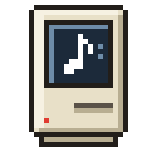
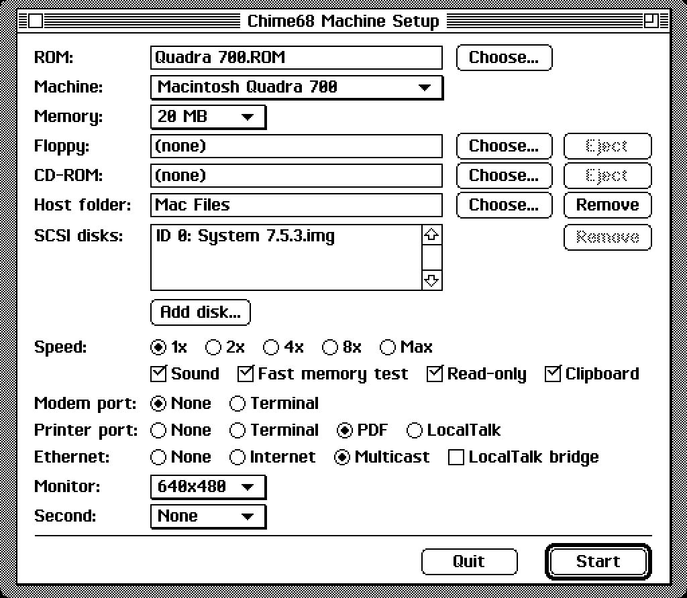

Chime68A classic Macintosh emulator, written in Rust.
It runs the 68k Macs, from the Macintosh Plus and the SE through the Mac II, the SE/30 and the IIci to the Quadra 700, 900 and 950 and the PowerBook 140 and 170, and boots everything from System 6 to Mac OS 8.1. Colour, sound, floppies, SCSI disks and CDs, Ethernet out to the Internet, LocalTalk, save states and printing to PDF are all in.
Free and open source under the MIT licence. Bring your own ROM.
